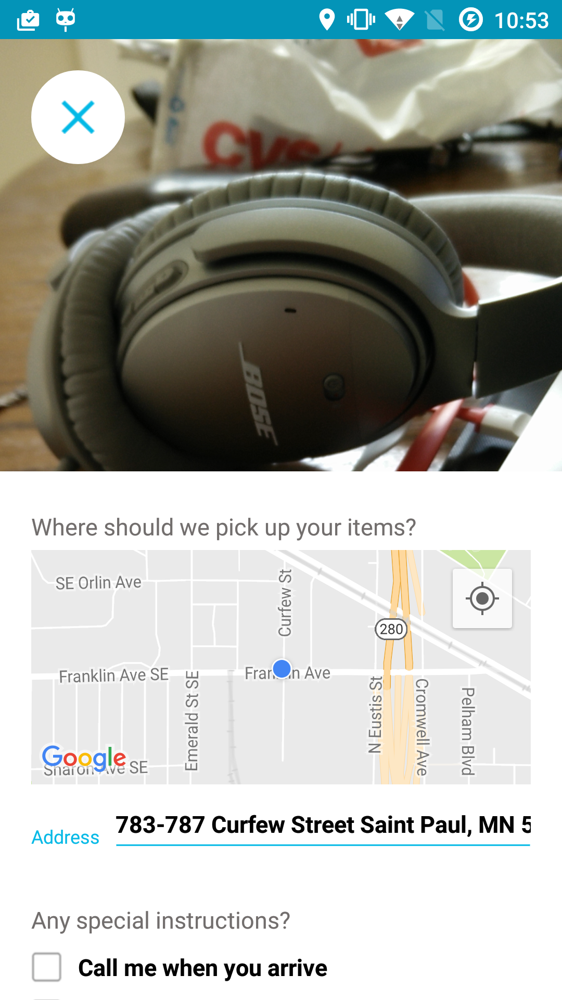
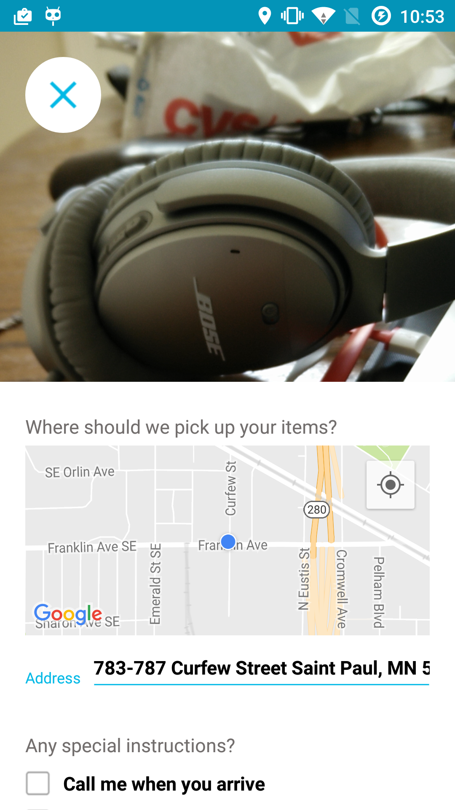

Twistjam, developed from June - December 2015
Twistjam is a guitar learning app that allow guitar fellows to make and share guitar chords. Song developed along with three friends after work. Song led the iOS development and rails backend. The app is written entirely in swift.


LifeSource Gallery of Hope, developed October 2015
LifeSource Gallery of Hope is an iPad app Song developed at Software For Good for a local organization LifeSource that shows organ donors and awaiting transplants.

mAGIC, developed from September to November 2015
mAGIC is an app Song co-developed at Software For Good for University of Minnesota, it is a 7-day questionnaire app that encourages ovary cancer prone people to seek genetic couselling. Song and his co-developer envisioned the flower-roots look of the app and held weekly meetings with the client to discuss features and improvements.
Gone for Good, developed in June - October 2015
Gone For Good is an in-house project that Song built at Software For Good, which is simple app that allows you to donate your household items on the phone in a few clicks.
 

RMS, developed from February 2016 - present
Rms is an app developed by Song with founder Casey at Software For Good. It is an app for Retail Merchandising Services, Inc field representatives that allows them to view their assigned work and complete reports in store
DIVI UP, developed from January - June 2015
DIVI UP is a coupon app that allows you to find nearby deals and donate savings to charity of your choice. Song developed it with a senior developer while interning at Software For Good, he worked mostly on the UI including the map, user profile ,search/filter functions.